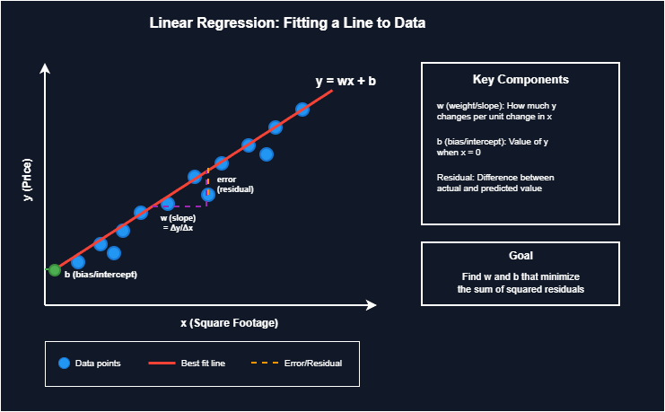

Linear regression is the starting point for understanding supervised learning. It predicts a continuous output by fitting a straight line through data points. Despite its simplicity, it remains widely used in production systems and serves as the foundation for more complex algorithms.
The core idea: find the line that best represents the relationship between input features and output. For simple linear regression with one feature, the equation is:
y = wx + b
Where:
• y = predicted value
• x = input feature
• w = weight (slope)
• b = bias (y-intercept)
For multiple features, this extends to:
y = w₁x₁ + w₂x₂ + ... + wₙxₙ + b

Fitting a line through data points to capture the general trend
Key Concepts
- Weights (coefficients): Determine how much each feature influences the prediction. A weight of 2 means the output increases by 2 for every 1 unit increase in that feature.
- Bias (intercept): The baseline prediction when all features are zero.
- Cost function: Measures prediction error, typically Mean Squared Error (MSE).
- Gradient descent: Optimization algorithm that iteratively adjusts weights to minimize cost.
Intuition
Think of fitting a regression line like placing a ruler through scattered dots on a graph to capture their general trend. The ruler position that minimizes the total distance from all dots represents the best fit. Mathematically, this means minimizing the squared differences between actual values and the line's predictions.
Practical Example
Consider predicting house prices based on square footage. If the learned equation is price = 200 × sqft + 50000, then a 1000 sqft house would be predicted at $250,000. The weight (200) indicates price increases $200 per additional square foot. The bias (50000) represents the base price independent of size.
from sklearn.linear_model import LinearRegression
import numpy as np
X = np.array([[1000], [1500], [2000], [2500], [3000]])
y = np.array([250000, 350000, 450000, 550000, 650000])
model = LinearRegression()
model.fit(X, y)
print(f"Weight: {model.coef_[0]:.2f}") # 200.00
print(f"Bias: {model.intercept_:.2f}") # 50000.00
print(f"Prediction for 1800 sqft: ${model.predict([[1800]])[0]:,.2f}")Common Use Cases
Common use cases include house price prediction, sales forecasting, risk assessment, trend analysis, and any scenario where you need to predict a numeric value from input features.
Assumptions
Linear regression makes several assumptions about the data:
- Linear relationship exists between features and target
- Features are not highly correlated with each other (multicollinearity)
- Residuals (errors) are normally distributed
- Constant variance in errors across predictions (homoscedasticity)
- Observations are independent of each other
Violating these assumptions leads to unreliable predictions and misleading coefficient interpretations.
Limitations
Limitations exist beyond assumptions. Linear regression cannot capture nonlinear patterns. A quadratic or exponential relationship will be poorly approximated by a straight line. It is also sensitive to outliers since squaring errors amplifies extreme values. A single outlier can significantly shift the fitted line.
Finding Optimal Weights
Two approaches exist for finding optimal weights:
- Closed-form solution (Normal Equation): Computes weights directly using matrix operations: w = (XᵀX)⁻¹Xᵀy. This works well for small datasets but becomes computationally expensive with many features.
- Gradient descent: Iteratively adjusts weights and scales better to large datasets.
Regularization
Regularization techniques extend linear regression to handle overfitting:
- Ridge regression (L2): Adds a penalty term that shrinks coefficients toward zero.
- Lasso regression (L1): Can reduce some coefficients to exactly zero, performing feature selection.
These become important when dealing with many features or correlated predictors.
When to Use Linear Regression
Linear regression works well when relationships are approximately linear, interpretability matters more than maximum accuracy, and the underlying assumptions hold reasonably well. It remains the first algorithm to try for regression problems and often serves as a baseline against which more complex models are compared.